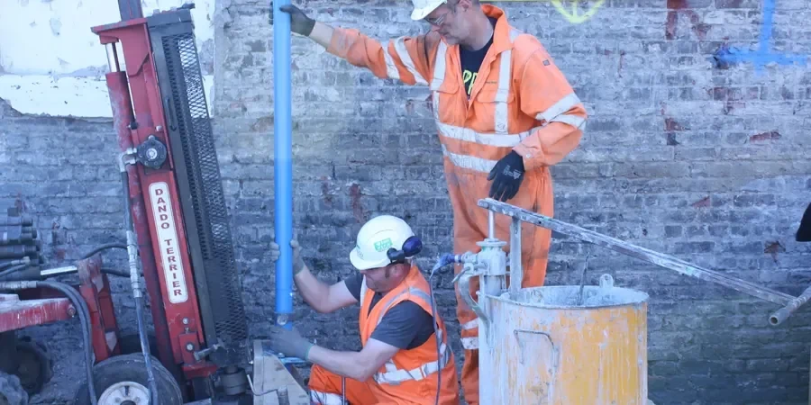

En el corazón de Santiago, ofrecemos servicios integrales de geotecnia que abarcan desde la caracterización de suelos hasta el diseño de cimentaciones y el monitoreo de obras. Nuestra experiencia consolidada en la Región Metropolitana nos permite entender los desafíos del subsuelo local, garantizando soluciones seguras y eficientes. Realizamos investigaciones de campo con equipos calibrados y ensayos de laboratorio que cumplen con las normativas chilenas, brindando informes técnicos que facilitan la toma de decisiones en proyectos de edificación, infraestructura vial y minería urbana. Conozca más sobre nuestras capacidades en estudios de suelos y análisis de licuefacción.

Descripción del proceso
Aspectos locales
Nuestra firma cuenta con experiencia regional consolidada en Santiago, habiendo participado en proyectos emblemáticos de edificación en altura, túneles y obras civiles. Disponemos de un laboratorio geotécnico calibrado y equipos de campo como penetrómetros CPT y equipos de tomografía sísmica, que nos permiten obtener datos de alta calidad. Trabajamos en estrecha coordinación con contratistas locales y municipalidades, asegurando que nuestros informes cumplan con las normativas chilenas y los plazos del proyecto. Además, ofrecemos asesoría en muros de contención y pavimentos flexibles adaptados a las condiciones del suelo santiaguino.
¿Necesita una evaluación geotécnica?
Respuesta en menos de 24h.
WhatsApp directo: +56 9 7709 2993La forma más rápida de cotizar
Email: contacto@geotecnia1.biz
Resumen visual
Normas de referencia
En Chile, la geotecnia se rige por la NCh 433 (Diseño Sísmico de Edificios) y el Decreto Supremo DS 61 (Reglamento de Suelos para Edificaciones). Para investigaciones de campo, aplicamos las normas NCh 3392 para el SPT, NCh 165 para el CPT y NCh 3258 para corte directo. En el laboratorio, seguimos las NCh 1515 y NCh 1534 para clasificación de suelos. Para proyectos de estabilidad de taludes y muros, consideramos el EN 1997-1 como referencia complementaria. Nuestros informes integran estos estándares para asegurar la compatibilidad con las exigencias municipales y de la autoridad marítima (Directemar) en zonas costeras.
FAQ
¿Cuáles son los principales desafíos geotécnicos al construir en el centro de Santiago?
En el centro de Santiago, los desafíos incluyen la presencia de rellenos antrópicos de hasta 5 metros de espesor, antiguos canales de regadío que generan suelos blandos y heterogéneos, y un nivel freático somero que puede requerir sistemas de abatimiento. Además, la alta densidad de edificaciones vecinas exige monitoreo de vibraciones y asentamientos. Realizamos campañas de exploración con SPT y CPT para caracterizar estos rellenos y diseñar cimentaciones profundas o mejoramientos de suelo.
¿Qué tipo de suelo predomina en las comunas del sector oriente de Santiago?
En comunas como Las Condes, Vitacura y Lo Barnechea, el subsuelo está dominado por gravas y arenas del abanico aluvial del Río Mapocho, conocidas como 'Gravas de Santiago'. Estos suelos presentan alta capacidad portante (presiones admisibles de 3 a 6 kg/cm²) y son favorables para cimentaciones superficiales. Sin embargo, en zonas de contacto con la Cordillera, pueden aparecer bolsones de arcilla o suelos residuales que requieren estudios específicos para evitar asentamientos diferenciales.
¿Qué normativa chilena regula los estudios de suelos para edificaciones?
La normativa principal es el Decreto Supremo DS 61 del Ministerio de Vivienda y Urbanismo, que exige un estudio de mecánica de suelos para toda edificación de más de 3 pisos o 500 m². Este estudio debe incluir sondajes, ensayos de penetración estándar (SPT) según NCh 3392, y clasificación de suelos según la NCh 1515. Además, la NCh 433 define los requisitos sísmicos, y el DS 60 regula el cálculo de fundaciones. Nosotros aseguramos que todos nuestros informes cumplan con estas exigencias.
¿Cómo se evalúa el riesgo de licuefacción en Santiago?
El riesgo de licuefacción se evalúa mediante ensayos de penetración como SPT y CPT, complementados con análisis de laboratorio (granulometría, límites de Atterberg). En Santiago, las zonas más susceptibles son los depósitos de arenas sueltas y limos no plásticos en sectores como Maipú, Pudahuel y la ribera del Río Mapocho. Nuestros informes incluyen el cálculo del factor de seguridad según el método de Seed-Idriss (actualizado) y recomendaciones de mitigación, como vibrocompactación o inclusiones de grava.